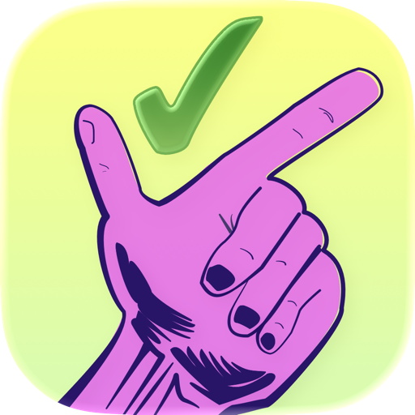

✓ 📋 ⏱ ✓ 📝Too many interests? Get them all done!
All your ideas in one place, organized by focus instead of deadlines. Free to use. No lock-in account and no subscriptions.
Organise work into areas, break it down into projects, add attachments and track tasks with GTD-style horizons.
Everything is stored as human-readable markdown files. Open them in any editor or let your AI Genie 🤖 do the work.
Pick a vault folder in iCloud Drive and your tasks follow you across all your Apple devices.
Built-in focus sessions with notifications to keep you on track without leaving the app.
Group projects into Focus Groups that integrate with Apple's Focus Mode for deeper immersion.
See flagged projects and run the Pomodoro timer right from your wrist.
No account, no analytics. The data is on your own computer and cloud.
The companion Watch app keeps your most important work visible at a glance. Check your flagged projects, browse tasks in each one, and control a Pomodoro session — all without reaching for your phone.
On first launch, choose any folder — a local directory or one inside iCloud Drive for automatic sync.
Add areas, create projects inside them, and break each project into tasks with priorities and horizons.
Switch between priority and horizon views, start a Pomodoro session, and tick things off as you go.
Everything is plain markdown on disk. Open the vault in Obsidian, Sublime Text, or any text editor you like.
¹ iCloud sync requires an iCloud account and depends on Apple's iCloud Drive service.
² Pomodoro notifications require notification permission on each device.
³ Apple Watch companion app requires a paired iPhone with TickMeOff installed.